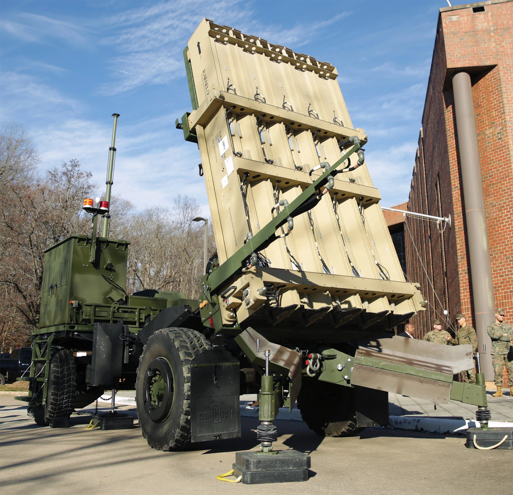
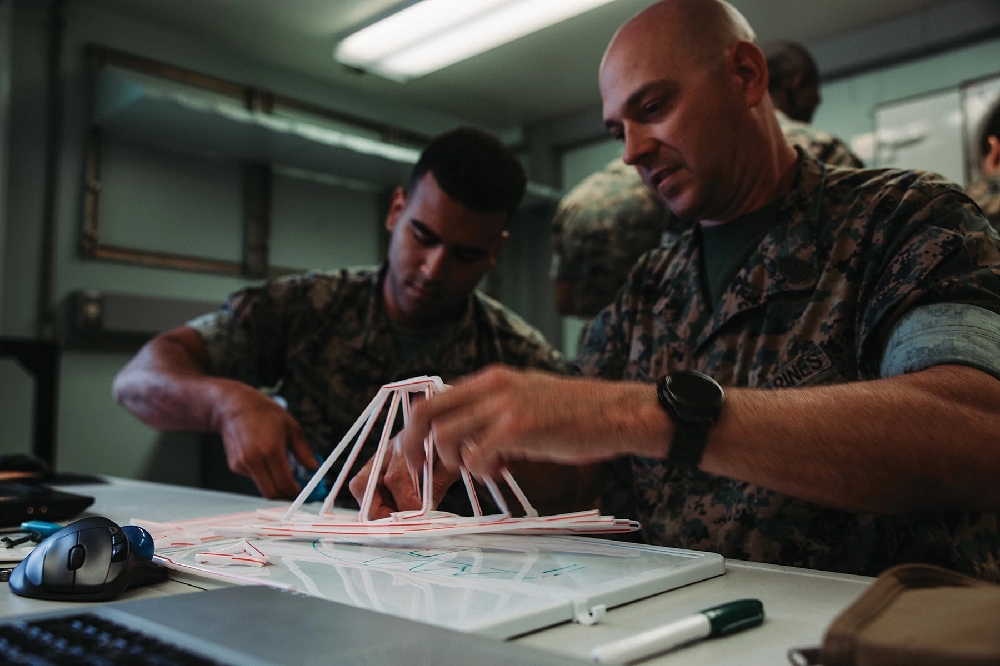

PROCEEDINGS · · Vol. 150/9/1,459
Agile Acquisition Now: Lessons from Ukraine
Ukraine’s decentralized acquisition culture has allowed it to use commercial drones to survive a brutal war with a much larger, more advanced adversary. The Pentagon should take note.
Read the originalSince 2018, the Department of Defense has directed the armed forces to shift their strategic focus from counterinsurgency operations in the Middle East to preparing for a great power conflict in the Indo-Pacific, with China as the nation’s pacing threat. Recently, however, a bipartisan commission warned that the United States now faces – and is unprepared for – the grim prospect of war against great power rivals on multiple fronts, revealing critical shortcomings in overall U.S. military readiness and weaknesses in the nation’s industrial base.1
In an October 2023 article, Niall Ferguson, senior fellow at the Hoover Institution, warned, “If you find the terminology of World War III alarmist, as some people do, I would merely point out that the objective of Russia is to wipe Ukraine from the map, the objective of Iran and Hamas is to wipe Israel from the map, and the objective of China is to end Taiwan’s democracy and autonomy.”2
Given this backdrop, a reevaluation of the U.S. acquisition strategy emerges not as a choice, but as an imperative.

As the 2018 National Defense Strategy warns: “Failure to meet our defense objectives will result in decreasing U.S. global influence, eroding cohesion among allies and partners, and reduced access to markets that will contribute to a decline in our prosperity and standard of living.”3
There is growing apprehension that U.S. defense acquisition architecture – fatally linked to the fragile U.S. industrial base and vulnerable supply chains – may be ill-suited to meet the evolving demands of global warfare. Critics warn that acquisitions are bogged down by bureaucratic inefficiencies, cumbersome requirements, and wait times that often lead to “yesterday’s technology being delivered tomorrow at next week’s prices,” as Rob Murray, a senior fellow at the Atlantic Council and adjunct professor at Johns Hopkins University, once quipped.4
Noting recent warnings from the bipartisan Commission on the National Defense Strategy that the United States is unprepared to confront the growing probability of a multifront great power war, this bureaucratic inefficiency serves as a threat multiplier.5
The United States must innovate its military acquisition mechanisms to maintain its strategic advantage. While the overall architecture may remain the same, the acquisition community must embrace an entrepreneurial spirit and a renewed sense of urgency in using the new tools offered by the Pentagon.6
The Russia-Ukraine war is a proving ground for modern warfare and offers crucial insights into the benefits of agile acquisition strategies. As the Pentagon seeks to understand the nature of the future fight, lessons from Ukraine’s battlefield are vital. These lessons are especially pressing if military experts and pundits have correctly predicted that drones will play an important role in the future of warfare.7


Since February 2022, Congress has directed more than $175 billion in aid to Ukraine, with the most recent package passed in July 2024 following the NATO Summit in Washington providing $225 million to “strengthen Ukraine’s air defenses and reinforce Ukraine’s capabilities across the front lines.”8
Yet, even with continued security guarantees from Washington and its international partners, Kyiv is keenly aware that Western aid is not only often slow to arrive, but also increasingly vulnerable to the fickle tides of public opinion. Thus, it has used commercially available alternatives to meet its acquisition needs.
Ukraine’s acquisition strategy has allowed the military to integrate a wide range of equipment from around the globe. A crucial aspect of the Ukrainian military’s effectiveness lies in its unique blend of decentralization and dispersal. These two interrelated strategies empower smaller units to make independent decisions.
“What enables a platoon, for example, to independently acquire off-the-shelf drones from manufacturers like DJI and modify them into strike-capable units – using components compatible with the Mavic 2 or Mavic 3 – is the principle of decentralization,” Murray explained.9
Kyiv’s decentralized acquisition architecture empowers its commanders to act swiftly, unencumbered by bureaucratic red tape. As a result, the Ukrainian military has been able to develop one of history’s most successful drone fleets – capable in both land and sea combat scenarios. While Ukraine has demonstrated the potency of Western military hardware – HIMARS and Patriot missile systems come to mind – its most striking successes often have been achieved with commercially sourced systems.
Since the start of the conflict, Ukraine has used commercial drones to terrorize Russian troops, infrastructure, and warships. Early proof of Kyiv’s success emerged in September 2022 when a drone from its experimental fleet – ingeniously assembled from civilian model components like those of SeaDoo’s GTX or Fish Pro – was discovered on the shores of Sevastopol.10 Since then, Ukraine has continued to terrorize the Russian Navy, forcing what is left of its Black Sea Fleet to flee from its base in annexed Crimea.11
Ukraine’s successful deployment of commercial drones against a superior force exemplifies the strategic value of agility in adopting new technologies. While U.S. military capabilities far exceed these unmanned systems in all measurable aspects, Ukraine’s approach underscores a crucial lesson: Superior capability can be offset by the large-scale, rapid deployment of new and cheaper technologies.
The Case for Rapid Acquisition
The United States’ military acquisition process is increasingly becoming its Achilles’ heel. Bogged down by red tape and cumbersome requirements, the system prioritizes caution over agility, risking obsolescence and undermining the military’s ability to adapt in a fast-changing battle environment.
A deep dive into the 2022 National Defense Strategy reveals that, although improvements have been made, the Pentagon is aware of limitations and misalignments within the acquisition system that have made it “too slow and too focused on acquiring systems not designed to address the most critical challenges we now face.”12
While comprehensive reform of the Pentagon’s acquisition process is unlikely, new tools such as the Adaptive Acquisition Framework and Other Transaction Authority make adaptability possible.13 These innovations streamline procurement and foster rapid innovation, creating flexible pathways for contracting and development. However, without a cultural shift and increased urgency within the acquisition community, these tools will not reach their full potential.
Glenn Lamartin, an acquisition expert and adjunct professor at Georgetown’s McCourt School of Public Policy, notes, “At the end of the day, you have to incentivize the right behavior. In acquisition, this particularly means shifting from rewarding compliance with existing policy and processes, to rewarding improvement, responsiveness, and meeting the warfighters’ requirements more swiftly.”14
Equipping the Marine Corps, Expeditiously


With Force Design as its strategic blueprint, the U.S. Marine Corps is modernizing with a focus on expediting acquisition processes. Within the acquisition community, there are several examples of programs that have used Pentagon tools to streamline operations, thus accelerating delivery of crucial capabilities to warfighters. Even within the current antiquated architecture, the Marine Corps is proving there is room for agile acquisition.
At Marine Corps System Command’s Combat Support Systems, the Advanced Manufacturing Systems Team is rapidly deploying commercial technologies to warfighters through accelerated acquisition programs. Expeditionary fabrication shelters and tactical fabrication kits are prime examples, using commercial-off-the-shelf 3-D printers modified for cyber compliance and austere environments.
The software for these systems is managed in the Digital Manufacturing Data Vault through a nontraditional acquisition path. Using an agile development framework, commercial software tools are adapted to the Marine Corps’ needs via a production Other Transaction Authority contract. This strategy supports the rapid design and production of local solutions, repair parts, and novel capabilities, empowering local units to meet emerging battlefield needs and ensuring timely operational impacts.
Colonel Paul Gillikin, program manager for Combat Support Systems, described the speed with which his team has been able to cut acquisition times by using nontraditional pathways:
Using Middle Tier of Acquisition [MTA] authorities and Other Transaction Agreements have allowed us to experiment with Marines early in the acquisition process when we did not know exactly what we wanted or what was available in the market. . . . The MTA governance also enabled us to go to industry with a user story or draft concept of operation and allow them to use their creativity to solve the problem. The alternative would be to hand them a rigid performance specification and tell them to design and test to that. The issue is that we do not always have full surveillance of the market and you could be surprised by new advances that a specification closes the door to capturing.15
Another example of rapid acquisition is the revitalization of the Marine Corps’ air defense capabilities, with the Medium-Range Intercept Capability (MRIC) a compelling example of programmatic success using middle-tier acquisition and rapid prototyping.
In just five years, PEO Land Systems has transformed the Marine Corps’ air defense capabilities, moving from reliance on the Stinger Man-Portable Air-Defense System to establishing a comprehensive suite of capabilities – including advanced systems such as the Marine Air Defense Integrated System, the Light Marine Air Defense Integrated System, and MRIC – to counter a full range of aerial threats.
“MRIC, our counter cruise missile solution, exemplifies efficient integration and smart acquisition,” said Don Kelley, then-program manager for Ground Based Air Defense. “We’ve harnessed field-tested technologies and incorporated them into our system. This comprehensive amalgamation, validated through rigorous live-fire exercises, has enabled us to meet the counter cruise missile capability needs identified in Force Design.”16
While many individual program offices are striving to accelerate their processes, the Marine Innovation Unit (MIU) is setting the benchmark for rapid, off-the-shelf acquisition at an organizational level. Composed of a diverse group of reservists, MIU is a strategic connector between industry and the Marine Corps, facilitating the swift acquisition and implementation of cutting-edge technologies. By working “by, with, and through” other units, MIU combines military discipline with civilian innovation.
According to Lieutenant Colonel Mathison Hall, an MIU team member assigned to the Marine Corps Warfighting Laboratory, MIU’s innovative approach significantly accelerates the process of acquiring and testing new technologies:
To get something in the hands of Marines for experimentation, we can take commercial off-the-shelf products, get them out there quickly, and rapidly iterate. . . . This is the classic design thinking model, developing empathy with the end user, getting an initially viable prototype in their hands. Without going through a multiyear, multimillion or even billion-dollar process, we can rapidly get a prototype that meets our needs.17
A testament to MIU’s agility is the expedited progression of small boats for Marine littoral regiments from conceptualization to commercial solicitation in under five months.
The lessons from Ukraine’s battlefield underscore the critical need to adapt the U.S. acquisition framework. The current bureaucratic processes no longer align with the demands of an ever-evolving security landscape, especially as U.S. adversaries thrive through central planning of their industrial. Ukraine’s notable achievements in decentralized acquisition, coupled with recent success stories from the Marine Corps, are valuable blueprints for the joint force.
As the United States moves forward, it must draw inspiration from Ukraine and fully harness the potential of a culture of decentralized acquisition. By reimagining acquisition strategies based on these lessons – and moving with a renewed sense of urgency and purpose – the United States can maintain and enhance its position on the world stage.
Footnotes
- Jane Harman et al., Report of the Commission on the National Defense Strategy (Santa Monica, CA: RAND, 2024).↩
- Barbara Weiss and Oliver Wiseman, “Niall Ferguson, Vinay Prasad, and Global Jihad Day at UCLA,” The Free Press, 17 October 2023.↩
- Gen James Mattis, USMC (Ret), Summary of the 2018 National Defense Strategy of the United States of America: Sharpening the American Military’s Competitive Edge (Washington, DC: Department of Defense, 19 January 2018).↩
- Rob Murray, “NATO Can Learn from Ukraine’s Military Innovation,” Chatham House, 3 November 2023.↩
- Harman et al., Report of the Commission on the National Defense Strategy.↩
- “Adaptive Acquisition Framework.”↩
- Mark Jacobson, “Ukraine’s Drone Strikes Are a Window into the Future of Warfare,” The Atlantic Council, 14 September 2023.↩
- Jonathan Master and Will Merrow, “How Much U.S. Aid Is Going to Ukraine?” The Council on Foreign Relations, 9 May 2024; and Secretary of State Antony J. Blinken, “United States Announces Significant New Military Assistance for Ukraine,” U.S. Department of State, 11 July 2024.↩
- Rob Murray, conversation with author, 13 October 2023.↩
- H I Sutton,”Suspected Ukrainian Explosive Sea Drone Made from Recreational Watercraft Parts,” USNI News, 11 October 2022.↩
- Tom Balmforth, “Ukraine Navy Chief Says Russia Is Losing Crimean Hub in Black Sea,” Reuters, 8 July 2024.↩
- Lloyd J. Austin, 2022 National Defense Strategy (Washington, DC: Department of Defense, 27 October 2022).↩
- “Adaptive Acquisition Framework”; and Under Secretary of Defense for Acquisition and Sustainment, Other Transactions Guide (Washington, DC: Department of Defense, August 2023).↩
- Glen Lamartin, conversation with the author, 25 October 2023.↩
- Col Paul Gillikin, USMC, conversation with the author, 10 July 2024.↩
- Johannes Schmidt, “Back to the Future: MRIC and the Rebirth of the Corps’ Air Defense Capability,” PEO Land Systems, U.S. Marine Corps, 27 July 2023.↩
- LtCol Mathison Hall, USMC, conversation with the author, 24 October 2023.↩